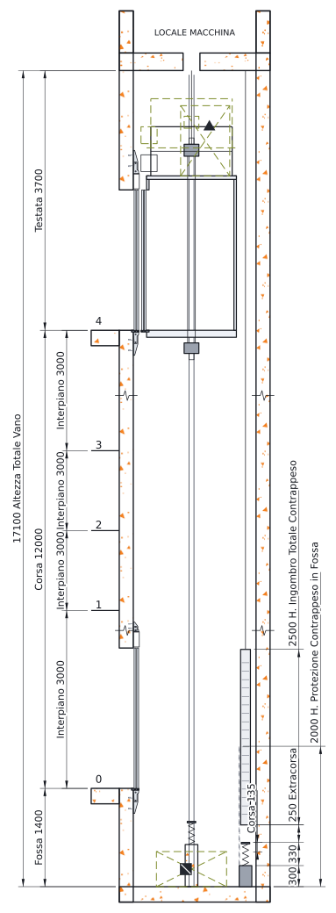

Software di progettazione ascensori
Dal rilievo alla firma in un solo software. Basta fogli Excel e calcoli rifatti a mano.
Sostituzione dell’argano o progetto completo: misuri il vano sul tuo DXF o DWG, LiftPilot calcola l’argano con la UNI EN 81-50, disegna il vano con le verifiche della UNI EN 81-20 e prepara tavole e relazioni pronte da verificare e firmare.

Come funziona
Schede di rilievo e misure del vano dal tuo DXF o DWG: il disegno resta nel browser.
Solo argano, ammodernamento o trasformazione completa: aderenza, funi, freno, motore.
Pianta e sezione con cabina, porte, guide, fossa e testata. Cambi una quota, le verifiche si aggiornano.
Il 3D si muove con le forze del calcolo: frenata di emergenza, carico al 125 %, urto sugli ammortizzatori.
La relazione tecnica di modifica secondo UNI 10411-1 e 10411-11, un passo alla volta.
Tavole A4 con cartiglio, relazione di calcolo in PDF, ogni vista in DXF e DWG 1:1, bozza d’ordine.
Per ogni verifica non soddisfatta o con «Attenzione» il software prova il progetto intero e propone la modifica più piccola che la fa passare, senza farne fallire un’altra. Un clic su «Applica» e il progetto è aggiornato.
Profilo normativo italiano
Gratuito durante la beta, con tutte le funzioni e i colleghi senza limite.
Inquadra e scopri
LiftPilot